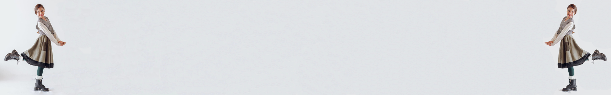

PROFESORADO DE FOLKLORE
En la Academia contamos con el Profesorado Acelerado para adultos de Folklore, avalado por la CONFEDERACIÓN INTERAMERICANA DE PROFESIONALES DE DANZA CONSEJO MUNDIAL DE PROFESIONALES DE DANZA Central Presidencia - Nº 1064 EDD
El profesorado cuenta una duración de 2 años, divido en 4 semestres y se otorga el titulo de PROFESOR DE DANZAS FOLKLÓRICAS ARGENTINAS
- INFANTIL
- 1° INFANTIL
- Gato - 1 Giro
- Gato - 2 Giro
- Chacarera
- Carnavalito
- Zapateo N°1 y N°2
- Juego de Expresión
- Conocimiento del Cuerpo
- Giros Izquierda y derecha
- Paso: Normal, de marcha, de polka y de vals.
- Colocación de brazos y de hombros
- Forma de tomar el pañuelo y la pollera
- Movimiento de cabeza
- Castañeta
- 2° INFANTIL
- Chacarera Doble
- El tunante
- Calandria
- 3° INFANTIL
- Huella
- Remesura
- Palito
- 1° INFANTIL
- ELEMENTAL
- 1° ELEMENTAL
- Bailecito
- Mariquita
- Lorencita
- Caramba
- Cuando
- Chamarrita
- 2° ELEMENTAL
- El Escondido
- El Remedio
- La Arangurita
- El Triunfo
- Jota Criolla
- El Pericón
- 3° ELEMENTAL
- Gato Correntino
- Pala Pala
- Gauchito
- Pajarillo
- Ecuador
- 1° ELEMENTAL
- SUPERIOR
- 1° SUPERIOR
- El Prado
- EL Llanto
- La Patria
- Jota Cordobeza
- La Sajuriana
- El Pollito
- 2° SUPERIOR
- La Cortejada
- El Tunante Catamarqueño
- La Zamba Alegre
- El Salta Conejo
- Los Aires
- La Gaviota de Buenos Aires
- 3° SUPERIOR
- El Sereno
- El Marote
- La Mañanita
- EL Huayra Muyoj
- El Guardamonte
- 1° SUPERIOR
PLAN DE ESTUDIOS